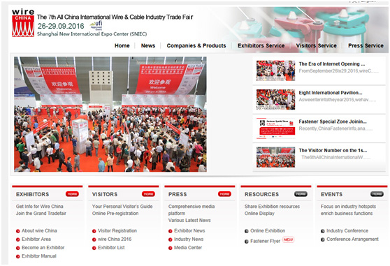

← ニュース一覧に戻る 企業ニュース
慶豊は第7回中国国際ケーブル・ワイヤー展示会に参加します
慶豊は新型プラネタリ式ケージ撚線機などの設備を携えて、第7回中国国際ケーブル・ワイヤー展示会に参加します

慶豊のブース番号：W2D43、ケーブル及び関連業界の皆様のご来場を心より歓迎いたします
（2016.9.26-29、上海新国際博覧中心）
詳細については以下をご覧くださいhttp://www.wirechina.net
慶豊は新型プラネタリ式ケージ撚線機などの設備を携えて、第7回中国国際ケーブル・ワイヤー展示会に参加します

慶豊のブース番号：W2D43、ケーブル及び関連業界の皆様のご来場を心より歓迎いたします
（2016.9.26-29、上海新国際博覧中心）
詳細については以下をご覧くださいhttp://www.wirechina.net